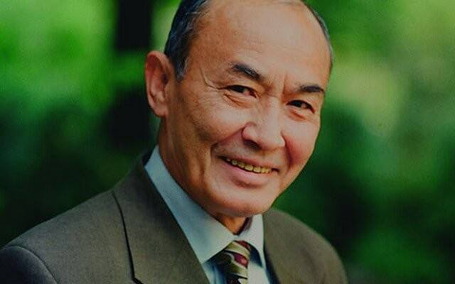

← Барча мақолалар
ИНСОН

ИНСОН
Олдига қўйганни қайтармай емоқ
Аслида, ақли йўқ ҳайвоннинг иши.
Оғизга келганни қайтармай демоқ
Ноқису бефаҳм, нодоннинг иши.
Таважжуҳ айлади Тангри таоло,
Муқаддас саналди Инсон деган ном.
Инсонни эътироф этмаган асно
Иблис ҳам қувилди Аршдан батамом.
Кўзингнинг ўнгида ўсгандек экин,
Раббим ҳам огоҳдир ҳар зум, ҳар ишдан.
Рўзаю парҳезда муддат бор, лекин
Ҳамиша ҳазар қил ҳаром-ҳаришдан.
Абдулла Орипов